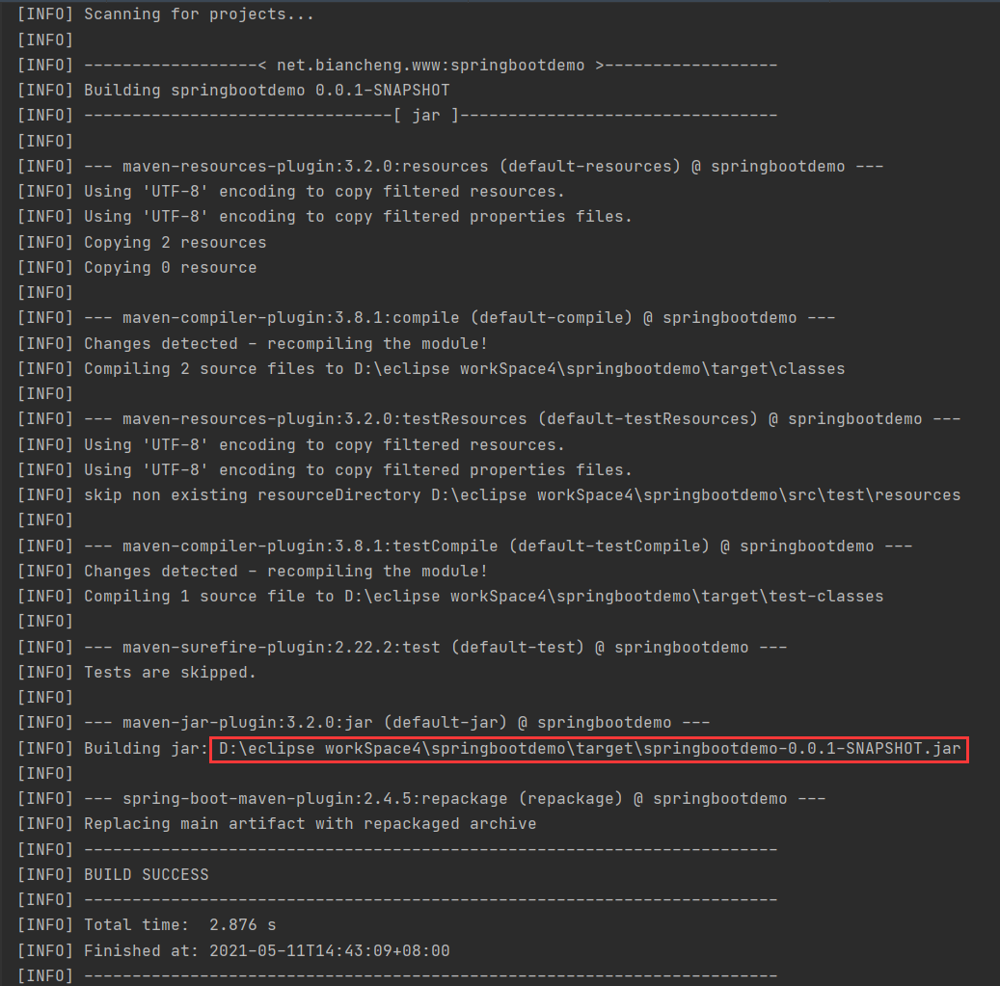
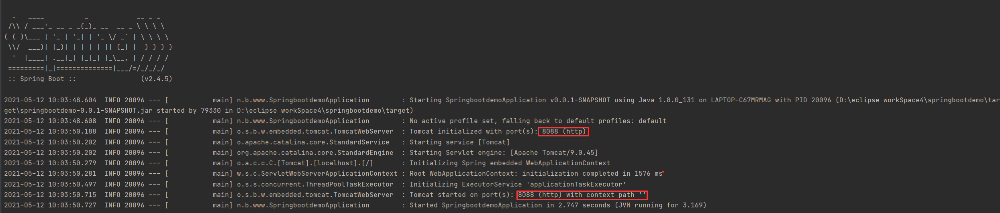
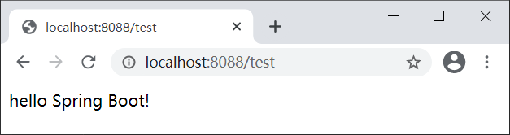
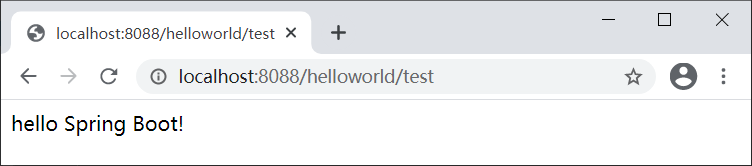

Spring Boot外部配置文件
除了默认配置文件，Spring Boot 还可以加载一些位于项目外部的配置文件。我们可以通过如下 2 个参数，指定外部配置文件的路径：
- spring.config.location
- spring.config.additional-location
spring.config.location
我们可以先将 Spring Boot 项目打包成 JAR 文件，然后在命令行启动命令中，使用命令行参数 --spring.config.location，指定外部配置文件的路径。
java -jar {JAR} --spring.config.location={外部配置文件全路径}
需要注意的是，使用该参数指定配置文件后，会使项目默认配置文件（application.properties 或 application.yml ）失效，Spring Boot 将只加载指定的外部配置文件。
示例 1
1. 在本地目录 D:\myConfig 下，创建一个配置文件 my-application.yml，配置如下。#指定配置文件 server: port: 8088
2. 执行以下 mvn 命令，将 springbootdemo 项目打包成 JAR。
mvn clean package
命令执行结果如下图。

图1：打包结果
图1：打包结果
3. 打开命令行窗口，跳转到 JAR 文件所在目录，执行以下命令，其中 --spring.config.location 用于指定配置文件的新位置。
java -jar springbootdemo-0.0.1-SNAPSHOT.jar --spring.config.location=D:\myConfig\my-application.yml项目运行结果如下图。

图2：使用外部配置运行项目控制台输出
图2：使用外部配置运行项目控制台输出
从控制台输出可以看出：
- 服务器端口号从“8084”被修改为“8088”，表示外部配置文件已生效；
- 上下文路径则从“/abc”被修改为默认值（‘ ’），表示项目内部的默认配置文件已失效。
4. 使用浏览器访问 “http://localhost:8088/test”,结果如下图。

图3：spring.config.location 指定外部配置文件访问结果
图3：spring.config.location 指定外部配置文件访问结果
spring.config.additional-location
我们还可以在 Spring Boot 启动时，使用命令行参数 --spring.config.additional-location 来加载外部配置文件。
java -jar {JAR} --spring.config.additional-location={外部配置文件全路径}
但与 --spring.config.location 不同，--spring.config.additional-location 不会使项目默认的配置文件失效，使用该命令行参数添加的外部配置文件会与项目默认的配置文件共同生效，形成互补配置，且其优先级是最高的，比所有默认配置文件的优先级都高。
示例 2
1. 将 springbootdemo 打包为 JAR 文件，打开命令行窗口，跳转到该项目 JAR 所在目录下，执行以下命令启动该项目。java -jar springbootdemo-0.0.1-SNAPSHOT.jar --spring.config.additional-location=D:\myConfig\my-application.yml
结果如下图。
图4：Spring Boot spring.config.additional-location 指定外部配置文件项目启动结果
注意：Maven 对项目进行打包时，位于项目根目录下的配置文件是无法被打包进项目的 JAR 包的，因此位于根目录下的默认配置文件无法在 JAR 中生效，即该项目将只加载指定的外部配置文件和项目类路径（classpath）下的默认配置文件，它们的加载优先级顺序为：
- spring.config.additional-location 指定的外部配置文件 my-application.yml
- classpath:/config/application.yml
- classpath:/application.yml
根据配置文件优先级分析可知：
- 以上三个配置文件中 my-application.yml 的优先级最高，因此该项目的服务器端口号为 “8088”；
- 只有 classpath:/config/application.yml 中配置了上下文路径（context-path），因此该项目的上下文路径为 “/helloworld”；
- 基于以上配置分析，得出该项目访问路径为“http://localhost:8088/helloWorld”。
2. 使用浏览器访问 “http://localhost:8088/helloworld/test”，结果如下图。

图5：使用 spring.config.additional-location 指定的外部配置文件访问结果
图5：使用 spring.config.additional-location 指定的外部配置文件访问结果
通过上面的示例，我们看到将 Spring Boot 项目打包后，然后在命令行启动命令中添加 spring.config.additional-location 参数指定外部配置文件，会导致项目根目录下的配置文件无法被加载，我们可以通过以下 3 种方式解决这个问题。
- 在 IDEA 的运行配置（Run/Debug Configuration）中，添加虚拟机参数 -Dspring.config.additional-location=D:\myConfig\my-application.yml，指定外部配置文件；
- 在 IDEA 的运行配置（Run/Debug Configuration）中，添加程序运行参数 --spring.config.additional-location=D:\myConfig\my-application.yml，指定外部配置文件；
- 在主启动类中调用 System.setProperty（）方法添加系统属性 spring.config.additional-location，指定外部配置文件。
关注公众号「站长严长生」，在手机上阅读所有教程，随时随地都能学习。内含一款搜索神器，免费下载全网书籍和视频。

微信扫码关注公众号